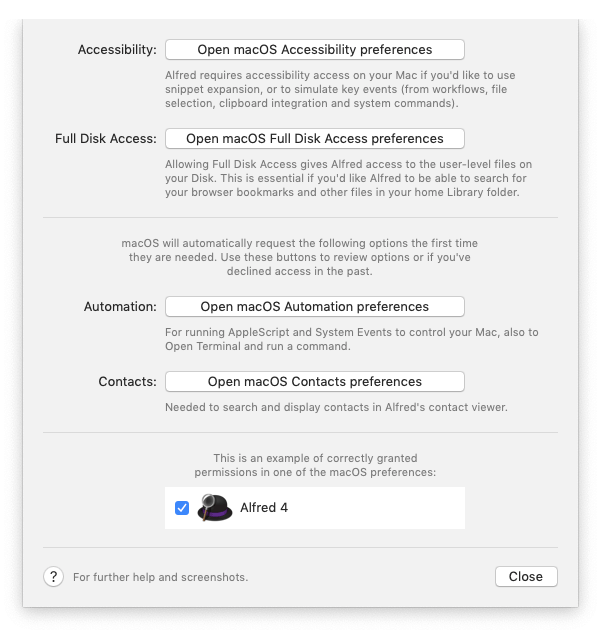

Granting Alfred Permissions on Your Mac
In order to perform certain actions on your Mac, Alfred will require various permissions. This allows Alfred to simulate key combinations, perform text replacement when using snippet keywords, as well as showing Contacts and Bookmarks in your search results.
Alfred will ask for permissions when you first launch Alfred 4, but you can also find a quick-access "Request Permissions..." button in Alfred 4's General Permissions.
Need some more help?
- Ensure Alfred is up to date
- Granting Alfred permissions for macOS integrations
- How can I give Alfred permissions if I said no when prompted?
Update Alfred to the latest update
First, ensure that you're using the latest Alfred update. Download Alfred 4 from our website, and check for updates to ensure you're on the most recent version available.
Click on the bowler hat in the menu bar to see which version you're using, or open Alfred's preferences to the Update tab.
macOS Integration
Apple have made a number of changes to the granularity of permissions in macOS 10.14 Mojave, so you'll need to take a few seconds to give Alfred necessary permissions.
These permissions are needed for various features, such as snippet expansion, simulating key events (e.g. in workflows and the clipboard), searching for Contacts and Bookmarks, and to run scripts.
Alfred will ask you to grant permissions when you first launch, but you can also open Alfred's Preferences to the General tab and click on the "Request Permissions..." button to grant these.

Security & Privacy permissions will then be opened to the Accessibility tab for you to grant access by checking the box next to Alfred 4.
What are the permissions Alfred needs?
Accessibility
Alfred requires accessibility access on your Mac if you'd like to use snippet expansion, or to simulate key events (from workflows, file selection, clipboard integration and system commands).
Full Disk Access
Allowing Full Disk Access gives Alfred access to the user-level files on your Disk. This is essential if you'd like Alfred to be able to search for your browser bookmarks.
Note that Alfred has always had this access on your Mac, but macOS requires you to manually grant this from macOS 10.14 Mojave onwards.
Once you've clicked the Full Disk Access prompt from Alfred's "Request Permissions..." dropdown, your System Preferences will pop up to the relevant permissions window. At this point, you'll need to unlock the padlock, and check the box next to Alfred 4.
You'll then see a notice that "Alfred 4 will not have full disk access until it is quit", allowing you to quit and relaunch Alfred.
Contacts
Search contacts and show contact data.
Automation
Running AppleScript and System Events to control your Mac, Open Terminal and run a command.
There's no need to manually add Alfred to Automation, as this will be requested automatically by macOS when needed.
How can I give Alfred permissions if I said no when prompted?
If you accidentally denied Alfred control when prompted, you can grant control by clicking the "Request Permissions..." box again, and choosing the relevant preferences.
You can also go directly to > macOS System Preferences > Security & Privacy > Privacy where you'll be able to check the box next to Alfred 4 for the relevant permissions.